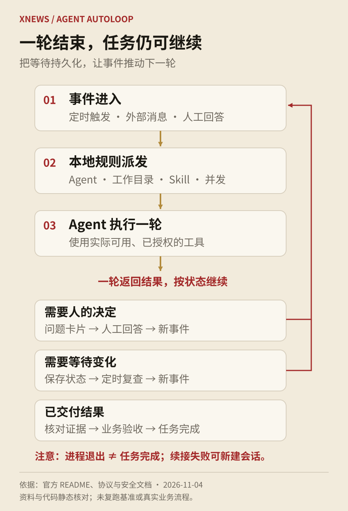
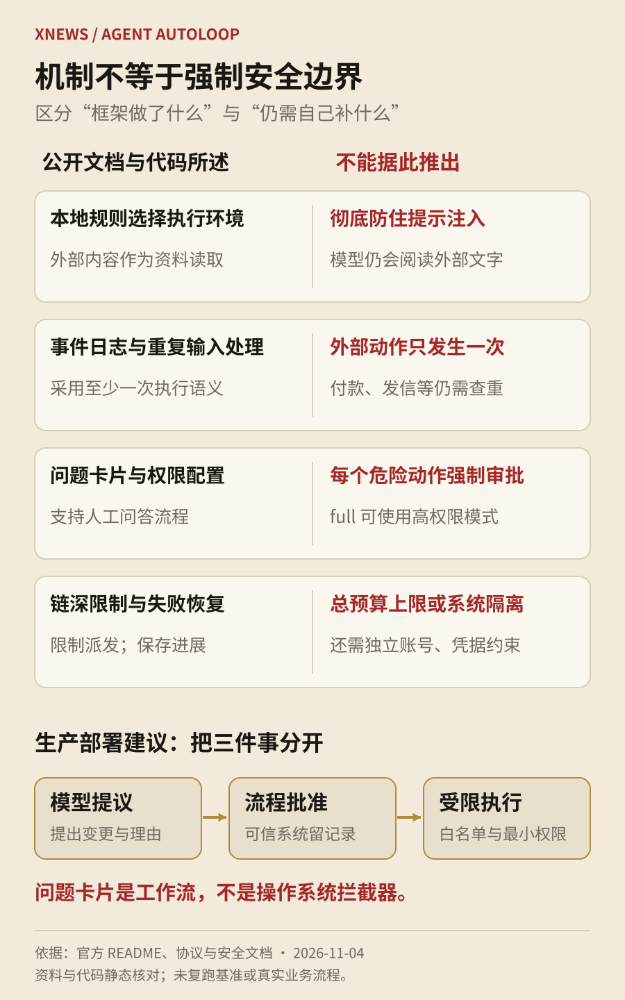

1. 这次开源了什么
卡兹克发布了 Agent Autoloop，将自己使用的 Agent 自动化流程整理为开源项目。按作者的介绍，前一篇分享收到反馈后，他参考 Pi 的小内核与扩展设计，以及 DeepSeek Harness 的插件思路，用两天重新拆分架构。文章介绍的是当时的 1.0.0 版本，作者也明确提醒仍可能有缺陷。[1][2]
项目希望解决的需求很具体：一个任务可能今天开始，半小时后需要复查，明天才等到人的决定。负责执行的 Claude Code、Codex 等工具可以结束当前进程，但事项不能随之丢失。Autoloop 负责保管状态、安排下一轮、把待决定的问题送到人面前。模型仍由已有 Agent 提供，业务操作仍由它的工具和账号完成。[3][4]
我的判断是，这个项目值得看的是长期任务的组织方式。自动化的价值不只在一次能做多少步，还在于能不能少打断人、保留进展，并在条件满足时继续。小团队往往已经有脚本、模型和聊天工具，缺的正是把它们接成可追踪流程的这一层。
2. 一件事怎样从触发走到完成
系统把定时触发、外部消息和人工回复都整理成事件，再按本地 rules.json 决定使用哪个 Agent、工作目录和任务 Skill。相同事项的消息可以合并，规则还能限制并发。这样，一个 Issue 连续收到几条补充，不必立刻启动几个 Agent 争着修改同一份代码。内核只承担调度和状态处理，外部服务接入交给插件。[3][6]
执行以“一轮”为单位。一轮结束后，Agent 交回结果；如果要问人，就创建问题卡片并退出；如果需要等待外部变化，可以预约下一次检查；如果还有后续动作，则发出新的事件。人的回答也会进入同一条事件链。协议区分了一轮结束和整件事完成，尤其是登录、连接中断等情况，不能把“已退出”当成“已验收”。[4]
这种拆法让等待时间与模型运行时间分开，也让中途接手更容易。但会话续接只是尽力而为：原会话恢复失败时，可以新建会话并使用保存的资料继续。因此，任务说明中最好有明确的已完成项、当前状态、剩余步骤和验收证据，不能只依赖模型记得上次说过什么。[4]

3. 四类插件，哪些已经验证，哪些只是能接
插件分为事件、执行 Agent、通知通道和代码交付四类。事件侧可以接 GitHub Webhook、HTTP 输入或定时轮询；执行侧可以调用专用适配器，也可以运行接收提示词并输出结果的命令行程序；通知侧把决定送到桌面或聊天软件；交付侧把审查、CI、合并和部署核验接起来。普通命令接入门槛低，但要支持会话续接、用量统计等功能，仍需要相应适配。[3][4]
项目 README 对验证程度作了区分：Claude Code、Codex 和官方 Codex ACP 适配器已由维护者跑通多轮问答与跨进程续接，飞书已跑通发送、按钮回调和卡片更新；钉钉、企业微信、Slack、Discord 的 Webhook 模板只在本地模拟服务验证过。DeepSeek Harness、Pi、OpenClaw、Hermes、Cursor、CodeBuddy 等接入命令虽然列在文档中，维护者没有逐一实跑。[3]
所以，“支持某平台”需要继续拆问：是格式兼容、能启动命令，还是已经在真实账号下完成权限校验、回复回调和失败恢复？企业采购尤其不能把这几个层次混在一起。浏览器也是同样的边界：Autoloop 不附送可用的浏览器连接，更不会因为接入 Codex 就自动继承桌面应用的会话。网页任务必须使用执行环境里实际可用、已授权的工具。[4]
4. 四个机制分别解决什么问题
第一是把等待状态持久化。等待人回复时，当前 Agent 进程可以退出，之后再被唤起。“零消耗”说的是这段等待不需要持续调用模型，不是整套系统零成本：调度服务仍运行，电脑仍需在线，真正执行任务仍会产生模型、网络和运维费用。[3][4]
第二是保留只追加的事件记录，并对重复输入和回执进行处理。它能解释某一轮由什么触发、采用哪版规则、如何结束。不过，协议明确采用至少一次执行语义。内部记录不重复，不代表外部付款、发信、部署天然只发生一次。遇到请求成功但确认丢失，业务动作仍要先查询现状，再决定是否重试。[4][6]
第三是将外部资料与本地规则分开。Issue、反馈等内容放入资料文件，事件不能自行指定执行 Agent、目录和权限。这缩小了外部文字直接操纵调度的机会，但模型最后仍会阅读这些文字，所以不能称为彻底防住提示注入。[5]
第四是限制 Agent 触发链的深度。超过八层后停止继续派发并通知人，人工提问和定时复查不会把链路计数清零。这有助于阻止 Agent 互相唤醒形成无限循环。它限制的是链路扩散，并不能代替单轮超时、金额上限或账户总预算。[3][6]
5. 原文七类用法，以及真正依赖的条件
作者围绕 AIHOT 列举了六类工作：跟踪各平台讨论、测试 AI 产品是否推荐 AIHOT、巡查厂商免费额度及规则变化、对照官网核验模型价格、定期检查网站可用性，以及清理一周积累的代码问题。另一个重点是公司工作台：员工通过飞书提交反馈，由 Agent 判断、修改、发布并回复，敏感决定再交给作者。[2]
作者自述，公司已收到八十多条意见，接近七十条由 Claude 自主处理，十几条需要他决定；可自动处理的需求通常能在一小时内完成修改、上线和反馈。这些是作者对自用系统的经验描述。文章没有提供可供独立复算的任务清单、难度分布、失败率或返工率，不能据此推导普遍的成功率，更不能当成公开仓库安装后的默认效果。[2]
这些例子可以按风险分三层理解。信息监测主要考验来源覆盖、数据更新和误报；修改价格、上下架内容、回复他人，会改变外部状态，需要可信业务接口与授权；自动修改生产代码还增加了测试、发布和回滚责任。框架提供触发和跟进能力，具体业务能做到哪一步，取决于接入、权限、Skill 和验收设计。
尤其是舆情监测、跨 AI 产品提问和私人聊天记录读取，都不是装一个调度器就能获得的数据能力。来源能否访问、账号是否允许自动化、结果是否有代表性，都需单独确认。作者自用的内部系统也不等于已经随开源仓库交付。公开模板包括早报、Issue 跟进、告警、反馈、网站巡检、飞书摘要和 PR 交付，但文档对部分业务模板注明使用虚构数据、本地 HTTP 与假 CLI 验证，未在真实账号下跑完整业务。[3]
6. 自动交付最有吸引力，也最需要验收
交付插件按约定识别 PR 标签：deliver 进入交付流程，deliver-review 可用于只审查、不自动合并。流程覆盖审查、等待 CI、合并、等待发布，再检查线上版本。规则和审查配置从主干读取，避免让待审 PR 自己修改审查规则。安全文档还明确说明，接单电脑不会检出并运行 PR 中的代码、测试、配置或 hooks。[2][5]
这个边界很重要。自动评审若一边审陌生代码，一边直接执行其中的脚本，风险远高于只读差异。但不在审查机上运行 PR，也意味着测试仍需要由受控 CI 等环境完成。审查插件无法替代 GitHub 分支保护、必需检查、环境审批和生产账号权限。[5]
我的建议是把“合并”“发布完成”“线上健康”分别留证据。一条 CI 绿灯只证明特定检查通过，部署任务结束只证明流程结束，线上返回成功也不必然说明新版本已生效。应核对准确提交或版本，并检查关键业务路径。涉及数据库迁移、计费、权限和外部通知的变更，宜保持单独审批与回滚方案。
7. 性能数字如何读，哪些结论不能外推
原文给出的作者自测量级是：内核约 1,600 行、启动少于 0.1 秒、空闲内存约 60 MB、千个连接约 170 MB，并称派活基本在 1.5 毫秒以内。当前仓库的表格更具体：Apple M5 Pro、24 GB、Node 24.21.0 环境下，冷启动 88.78 毫秒、空闲 RSS 59.94 MB、千个长轮询连接 RSS 170.49 MB、持久化写入 2,394 条/秒、派活 p99 为 1.82 毫秒。两处说法不应混成同一测量口径。[2][3]
这些数字衡量的是调度与持久化开销，不是模型完成业务的速度，也不包含所有 Agent 的内存。一次代码分析可能需要很久，即使派活只花几毫秒，总耗时也不会随之缩短到毫秒级。“零运行时依赖”和约 1,650 行代码主要描述内核的轻量性，不能理解为无需 Node、Git、Agent CLI、账号或外部服务。[3]
项目提供随机模拟、进程强杀和基准测试入口，也说明格式变化后需要从历史日志重建。README 列出的 110 万条事实正常启动约 99.8 毫秒，与格式变化后首次全量重建约 43.1 秒，是两种不同情况。历史规模增加仍会占用磁盘并拖慢部分汇总操作。[3]
原文提到断电恢复，但仓库安全说明更谨慎：验证覆盖进程崩溃和有限场景，不等于整机断电恢复证明，也不等于完整安全审计。本文完成的是公开资料交叉核对与相关代码静态检查，没有复跑性能基准、强杀实验或真实业务流程。维护者测试结论与我们的核验范围应分开看。[5]
8. 最容易误读的地方：请示卡片不等于强制审批
系统有 askFirst、问题卡片和 read/edit/full 等权限配置，但要看这些配置最终怎样执行。当前 Codex 适配代码显式使用 approval_policy=never，并将三档访问级别映射为相应 CLI 沙箱模式；full 对应 danger-full-access。Claude 适配器在 full 下使用 bypassPermissions。这意味着不能假设底层 CLI 还会为每个危险动作弹出审批。[7][8]
卡片流程可以让遵循指令的 Agent 先问人，但若 Agent 错误理解外部文字，或插件自行执行命令，卡片本身并不是操作系统拦截器。安全文档也写明，通用 command 不会替任意程序限制权限，read 并不保证读不到本机密钥，同一系统账号下的进程不因此隔离。[5]
工程上更稳妥的做法，是把模型判断、流程批准、实际执行权限分开：Agent 可以提出变更，审批记录由可信系统保存，真正写入生产的执行器再按白名单和凭据范围执行。重要系统应使用独立账号或容器，尽量减少可见秘密及写入范围。这样即使模型误判，影响也能被权限边界限制。
还有两个容易被忽略的风险。插件是被信任的本地代码，安装前需要检查来源与内容；卡片回答链接是持有即授权，文档所述有效期为七天，不应发到公开页面或不相关群组。配置接收通道时，也要确认业务资料与问题标题是否适合所有接收人看到。[5]

9. 什么团队适合试，怎样从小范围开始
我的判断是，它适合已经使用命令行 Agent、有能力维护脚本和权限的小团队，尤其是经常遇到“做一段、等一段、再继续”的任务。个人开发者可以从本地早报或只读巡检开始；技术团队可以先做 Issue 分类和修复建议。需要组织级身份治理、多租户隔离、明确服务等级或合规审计的部署，则应先补齐相应能力，不能仅凭插件多、流程通就直接认定企业可用。
当前安装文档要求 macOS 或 Linux、Node 24、Git、curl，以及已安装并登录的 Agent。上手试跑会让 Agent 提问、退出等待、收到选择后继续，这能验证最基本的人工介入闭环。作者建议让现有 Agent 阅读 README 与 INSTALL.md 协助安装，但自动执行安装同样应先理解来源、权限和配置变更。[3][9]
仓库采用 MIT 许可证，但开源软件免费不意味着模型调用免费。模型消耗计入使用者自己的账号，自动化频率、订阅额度和对外服务方式仍要符合相应服务条款。README 建议高频自动化关注 API 的使用方式，对外提供服务使用 API Key；实际部署前应核对提供商的当前规则。[3]
一个合理的试点顺序是：先只读并保留完整日志；再允许修改隔离工作区，但不推送、不发布；之后才开放受约束的交付。每一步都安排故障演练，例如网络断开、重复事件、过期登录、无人回答、进程重启，以及外部动作成功但本地未收到确认。成功标准应包含错误恢复与不该做时能停下，而不只是正常流程演示。
评估收益时，可以记录人工介入次数、从触发到验收的时间、误报和返工、重复副作用、每件事的模型费用。节省了多少盯守时间，比派活快了多少毫秒更接近实际价值。停止规则、每日预算和人工接管入口，应在接入生产前确定。
10. 我的结论：小内核的价值在边界清楚
Agent Autoloop 展示了一种务实的产品方向：把已经可用的 Agent 接到持久化任务、事件触发和人工决策流程中，让工作跨过一次对话和一个进程继续推进。它采用的状态保存、事件日志、幂等与熔断并非新发明，但这些成熟方法用在 Agent 上，确实能补足单次演示最容易忽略的部分。
项目的轻量与可替换性有利于试验，也将业务接入和安全治理责任更多留给使用者。对个人和小团队，这可能是可以接受的取舍；对生产系统，真正的难点会落在权限、故障恢复、结果核验和维护责任上。我的评价是：值得作为自动化底座研究和小范围试用，现有公开证据还不足以证明它能普遍承担无人监督的生产交付。
来源说明：本文围绕用户指定的 X 帖子线索，阅读了 AITNT 的署名转载正文，并核对项目仓库、协议、安全文档和相关适配代码。转载页注明文章来自微信公众号“数字生命卡兹克”，页面日期为 2026-11-04；X 原帖未能直接读取，转载配图未纳入核验。本文为重新组织的原创解析，不是全文转载；作者经验、维护者测试与编辑判断已分别说明。仓库 main 会继续变化，本文核验时间为 2026-11-04。[1][2]